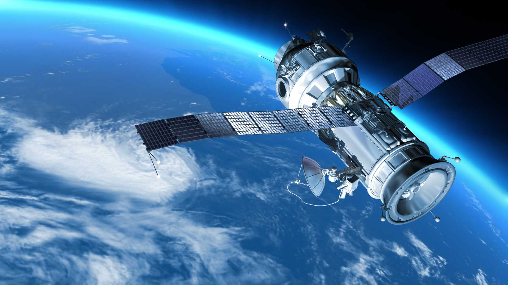
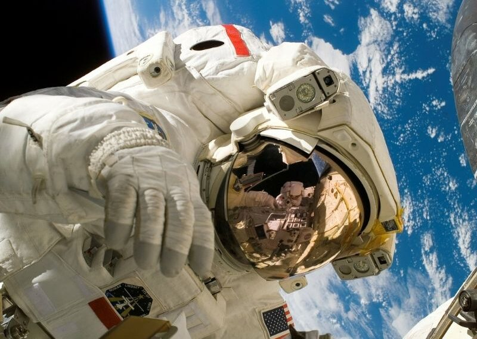

La exploración espacial se ha transformado en un eje fundamental para comprender mejor el origen, la evolución y el funcionamiento del universo. Hoy en día, este campo no solo se centra en investigar cuerpos celestes, sino también en impulsar el desarrollo de tecnologías avanzadas que posteriormente encuentran aplicaciones en la vida cotidiana, como mejores materiales, sistemas de comunicación y herramientas médicas.
Las misiones a la Luna, Marte y diversos asteroides han permitido estudiar en detalle la composición del sistema solar, su historia geológica y los procesos que lo han moldeado. Estas misiones también funcionan como plataformas de prueba para nuevas tecnologías que serán esenciales en futuros viajes tripulados de larga duración, como sistemas de soporte vital, hábitats autónomos y vehículos de exploración.
Además, la creciente participación de agencias espaciales alrededor del mundo ,como la NASA, ESA, JAXA y CNSA, junto con la incorporación de empresas privadas como SpaceX, Blue Origin y otras, ha generado un aumento significativo en la frecuencia de lanzamientos y en el ritmo de innovación. Esta colaboración público-privada ha democratizado el acceso al espacio y ha impulsado un crecimiento acelerado en este ámbito.

